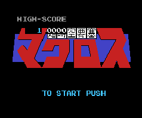

Super Dimensional Fortress Macross (NESA)

This is a standard horizontal-scrolling shooter. You pilot your Valkyrie as
you blast countless swarms of enemy ships. It has decent graphics and
gameplay, but it is not an outstanding game. Seems to run better under iNES.
Macross (MSX)
![[Macross]](images/MSX/mac_msx.gif) This is a standard horizontal-scrolling shooter much like the NES game above.
The graphics differ somewhat, but the gameplay is the same.
This is a standard horizontal-scrolling shooter much like the NES game above.
The graphics differ somewhat, but the gameplay is the same.
Return to Emulator Table of Contents
Last Modified 14 Dec 1996
Created 11 Nov 1996
Luis A. Cruz
cruzl@ccs.neu.edu